Spring Boot是用来简化新Spring应用的初始搭建以及开发过程。该框架使用了特定的方式来进行配置，从而使开发人员不再需要定义重复，繁杂的配置。
添加以下代码到pom.xml文件中：
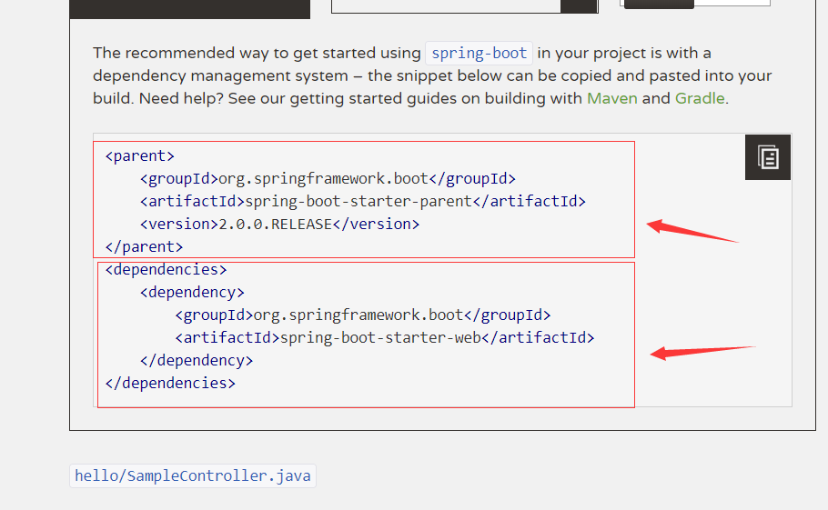
<!-- 引入springboot 父类依赖--> <parent> <groupId>org.springframework.boot</groupId> <artifactId>spring-boot-starter-parent</artifactId> <version>2.0.0.RELEASE</version> </parent> <!--添加sping boot的 jar包依赖: 该依赖包含spring框架中许多常用的Web 开发依赖. --> <dependencies> <dependency> <groupId>org.springframework.boot</groupId> <artifactId>spring-boot-starter-web</artifactId> </dependency> </dependencies>
★★★★★注意代码注释
package mvn.springboot_1; //@RestController 可以取@Controller注解，当添加这个注解时，它会为每个方法添加@ResponseBody注解 @Controller @EnableAutoConfiguration //该注解表示开启自动配置处理，是springboot的启动程序注解 public class SampleController { //spring boot 运行的入口类 @RequestMapping("/") @ResponseBody //该注解的作用时，把方法的返回值作为相应的内容，而不是页面的名称 public String home() { return "Hello Ssss!"; } public static void main(String[] args) throws Exception { /* * 1.SpringApplication是Spring Boot框架中描述spring应用的类， * 它的run()方法会创建一个应用上下文（Application Context）， * 然后它判断类路径上的依赖，比如我们引入了spring-boot-starter-web， * 然后它会判断当前应用程序为一个web程序，然后启动内置Servlet容器（默认tomcat服务器）来处理HTTP请求。 2.SpringWebMvc会将接收到的HTTP请求分发给controller控制器， 这里的@ResponseBody，它会直接将返回值作为HTTP Response的body部分返回浏览器。 3.@RequestMapping("/")就是我们经常写的处理请求的URL路径，可以引导程序处理正确的请求路径。 * */ SpringApplication.run(SampleController.class, args); } }
SpringApplication 则是用于从main方法启动Spring应用的类。默认，它会执行以下步骤：
①：如果使用 STS（spring-tool-suite）开发工具，则可以直接单击右键run as - > spring boot app 启动程序。然后打开浏览器，输入 localhost:8080 来查看。
②：也可以使用maven命令的方式运行spring boot 程序，单击右键 Run as -> maven build , 输入命令 spring-boot:run 来启动程序。然后打开浏览器，输入 localhost:8080 来查看。
在实际的maven项目中，我们需要建立以统一的父pom文件,来方便对maven项目的许多模块公共配置进行统一管理。
①：重新建立一个maven项目（名称：parentBoot），作为父项目，然后删除除了pom.xml文件的所有文件，删除干净后，到maven仓库引入这个spring-boot-dependencies 依赖，并把pom文件中的packaging标签的值改为pom形式。
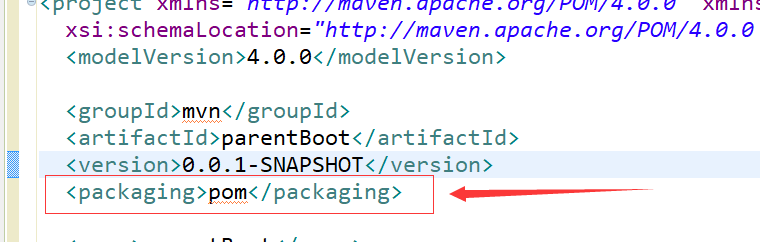
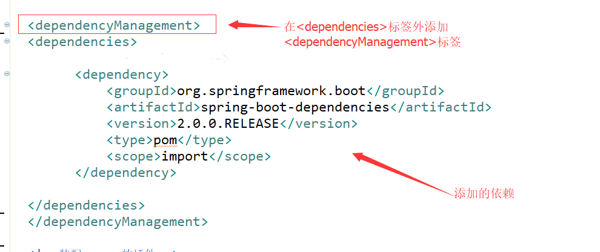
<project xmlns="http://maven.apache.org/POM/4.0.0" xmlns:xsi="http://www.w3.org/2001/XMLSchema-instance" xsi:schemaLocation="http://maven.apache.org/POM/4.0.0 http://maven.apache.org/xsd/maven-4.0.0.xsd"> <modelVersion>4.0.0</modelVersion> <groupId>mvn</groupId> <artifactId>parentBoot</artifactId> <version>0.0.1-SNAPSHOT</version> <packaging>pom</packaging> <name>parentBoot</name> <url>http://maven.apache.org</url> <properties> <project.build.sourceEncoding>UTF-8</project.build.sourceEncoding> </properties> <dependencyManagement> <dependencies> <!-- 父pom 文件支持 --> <dependency> <groupId>org.springframework.boot</groupId> <artifactId>spring-boot-dependencies</artifactId> <version>2.0.0.RELEASE</version> <type>pom</type> <scope>import</scope> </dependency> </dependencies> </dependencyManagement> <!--装配maven的插件--> <build> <finalName>parentBoot</finalName> <!--spring boot 打包插件--> <plugins> <plugin> <groupId>org.apache.maven.plugins</groupId> <artifactId>maven-compiler-plugin</artifactId> <configuration> <source>1.8</source> <target>1.8</target> </configuration> </plugin> </plugins> </build> <modules> <module>parentBoot-child</module> </modules> </project>
②：建立之前建立的父项目的子模块（名称：parentBoot-child）：
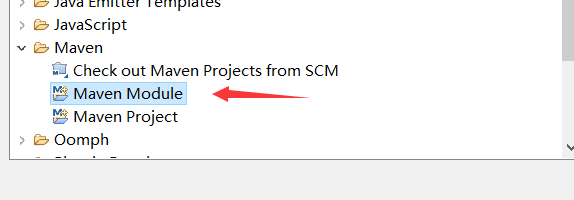
<?xml version="1.0"?> <project xsi:schemaLocation="http://maven.apache.org/POM/4.0.0 http://maven.apache.org/xsd/maven-4.0.0.xsd" xmlns="http://maven.apache.org/POM/4.0.0" xmlns:xsi="http://www.w3.org/2001/XMLSchema-instance"> <modelVersion>4.0.0</modelVersion> <parent> <groupId>mvn</groupId> <artifactId>parentBoot</artifactId> <version>0.0.1-SNAPSHOT</version> </parent> <artifactId>parentBoot-child</artifactId> <name>parentBoot-child</name> <url>http://maven.apache.org</url> <properties> <project.build.sourceEncoding>UTF-8</project.build.sourceEncoding> </properties> <dependencies> <!--添加springboot的依赖 --> <dependency> <groupId>org.springframework.boot</groupId> <artifactId>spring-boot-starter-web</artifactId> </dependency> </dependencies> </project>
package mvn.parentBoot.child; //@RestController 可以取@Controller注解，当添加这个注解时，它会为每个方法添加@ResponseBody注解 @Controller @EnableAutoConfiguration //该注解表示开启自动配置处理，是springboot的启动程序注解 public class SampleController { @RequestMapping("/") @ResponseBody //该注解的作用时，把方法的返回值作为相应的内容，而不是页面的名称 String home() { return "ssss"; } public static void main(String[] args) throws Exception { SpringApplication.run(SampleController.class, args); } }
③：运行子模块的springboot的程序。
这是简单的springboot项目配置标志（不能自动读取配置，更新代码）。
解决方法： 给子模块Maven项目的pom.xml文件添加两个依赖jar库（在maven仓库中寻找)
<dependency> <groupId>org.springframework</groupId> <artifactId>springloaded</artifactId> <version>1.2.8.RELEASE</version> </dependency> <dependency> <groupId>org.springframework.boot</groupId> <artifactId>spring-boot-devtools</artifactId> <version>2.0.0.RELEASE</version> </dependency>
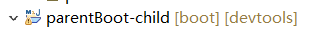
表示该项目变成热部署（自动更新状态,当你修改代码时，不需要重新启动。）
Spring 官方建议：其余所有程序类的包都要放在主类（入口类）的子包下，做到主类在主包中，控制器类在控制器子包中等。
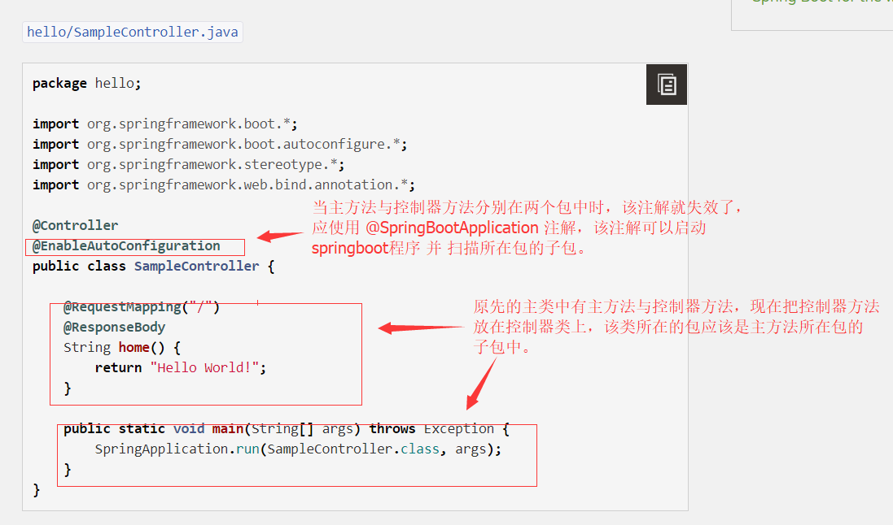
①：修改主类：
package mvn.parentBoot.child; @SpringBootApplication public class SpringbootMain { public static void main(String[] args) throws Exception { SpringApplication.run(SpringbootMain.class, args); } }
②：创建子包（控制器包），创建控制器类：
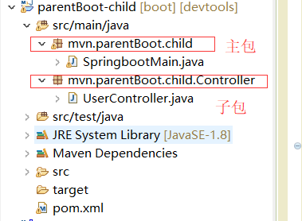
package mvn.parentBoot.child.Controller; @Controller public class UserController { @RequestMapping("/") @ResponseBody //该注解的作用时，把方法的返回值作为相应的内容，而不是页面的名称 public String home() { return "this is home() "; } }
③：运行程序
Springboot的项目打包，只需要在父项目（不是子模块）的pom.xml 文件中配置插件就可以了。
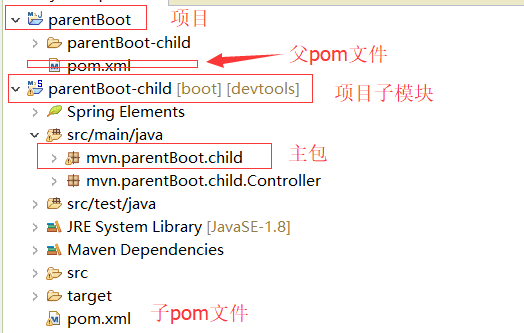
①：在父 pom.xml 文件中装配打包发布部署处理插件：
<!-- 该插件的主要功能是对项目的打包发布处理 --> <plugin> <groupId>org.springframework.boot</groupId> <artifactId>spring-boot-maven-plugin</artifactId> <configuration> <!-- 设置程序主类的位置（springboot主方法所在的类） --> <mainClass>mvn.parentBoot.child.SpringbootMain</mainClass> </configuration> <executions> <execution> <goals> <goal>repackage</goal> </goals> </execution> </executions> </plugin>
②：对当前的项目或者子模块先进行maven 更新，后执行“ clean package ” maven打包命令 。
③：在项目的target目录中会出现打包好的jar或war 包。
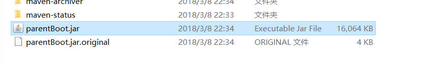
①：把打包好的jar包，随便放到某个路径下
②：以命令行的形式输入命令
③：在浏览器中输入网址。
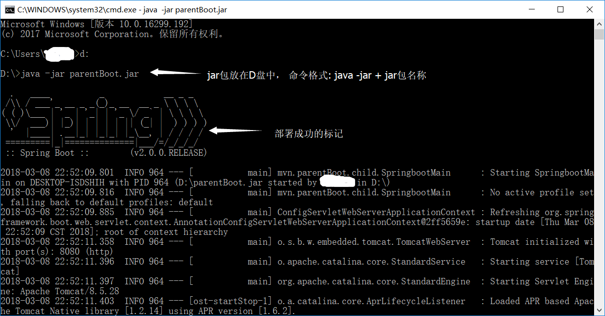
在web开发中，静态资源的访问是必不可少的，如：图片、js、css 等资源的访问。
①：Spring Boot 对静态资源映射提供了默认配置
Spring Boot 默认将 /** 所有访问映射到以下目录：
classpath:/static
classpath:/public
classpath:/resources
classpath:/META-INF/resources
所以静态资源目录名称需要符合以下规则： static 或 public 等。
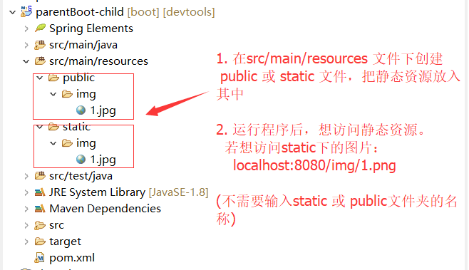
Spring Boot 默认会挨个从 public static 文件里面找是否存在相应的资源，如果有则直接返回。
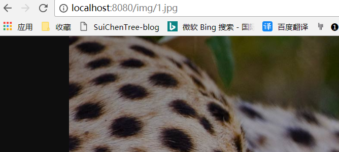
在一个项目中出现的全部异常我们我们都会统一进行处理的，那么如何进行统一进行处理呢？
①：创建异常处理控制器类 ExceptionController：
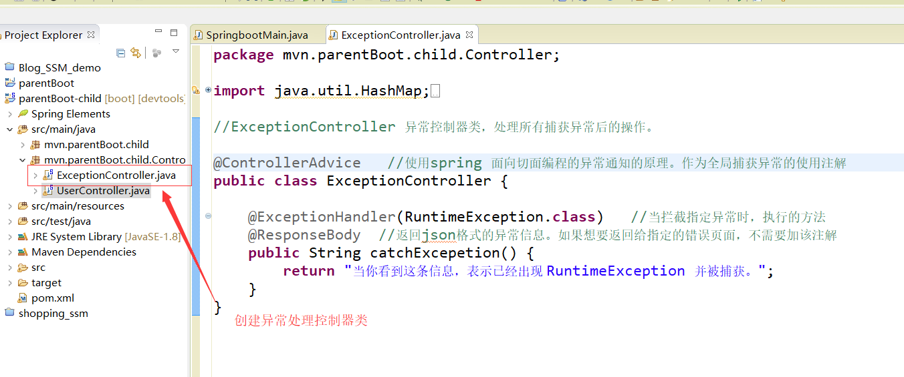
package mvn.parentBoot.child.Controller; //ExceptionController 异常控制器类，处理所有捕获异常后的操作。 @ControllerAdvice //使用spring 面向切面编程的异常通知的原理。作为全局捕获异常的使用注解 public class ExceptionController { @ExceptionHandler(RuntimeException.class) //当拦截指定异常时，执行的方法 @ResponseBody //返回json格式的异常信息。如果想要返回给指定的错误页面，不需要加该注解 public String catchExcepetion() { return "当你看到这条信息，表示已经出现 RuntimeException 并被捕获。"; } }
②：在某个控制器方法中制造一个异常：
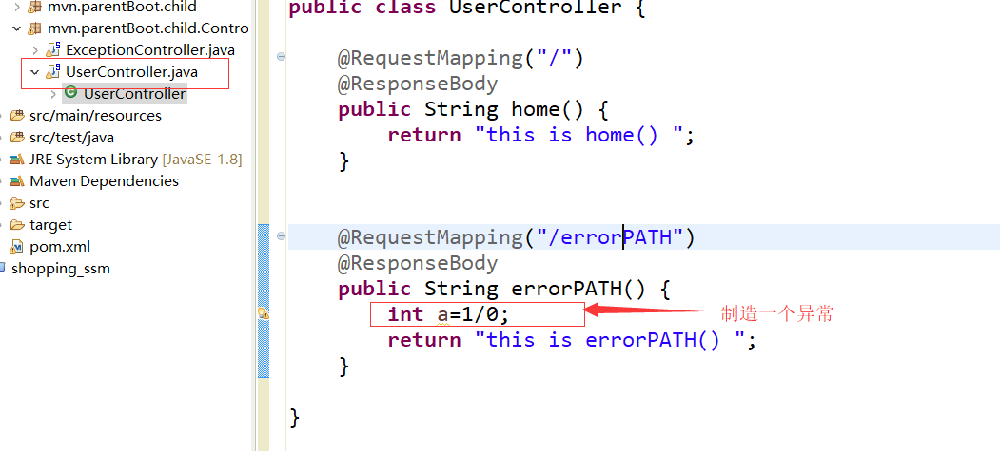
③：运行程序，并访问之前书写异常的控制器方法
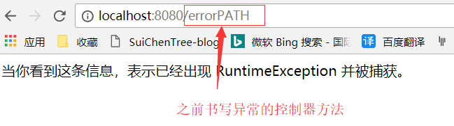
注意：springboot 不建议使用jsp作为页面格式
Freemarker : 是一款模板引擎： 即一种基于模板和要改变的数据， 并用来生成输出文本（HTML网页、电子邮件、配置文件、源代码等）的通用工具。
①：pom文件添加Freemarker依赖：
<dependency> <groupId>org.springframework.boot</groupId> <artifactId>spring-boot-starter-freemarker</artifactId> <version>2.0.0.RELEASE</version> </dependency>
②：在 src/main/resources下 创建application.properties文件进行的freemarker的基本配置：
application.properties:
##freemarker
spring.freemarker.cache=false
spring.freemarker.charset=UTF-8
spring.freemarker.check-template-location=true
spring.freemarker.content-type=text/html
spring.freemarker.enabled=true
spring.freemarker.suffix=.ftl
spring.freemarker.template-loader-path=classpath:/templates
③：在src/java/resources目录下创建templates文件夹并创建index.ftl文件：
index.flt:
this is freemarker file
注意：springboot 对于模板引擎默认的配置路径为：src/java/resources/templates
④：编写控制器方法去访问freemarker模板页面：
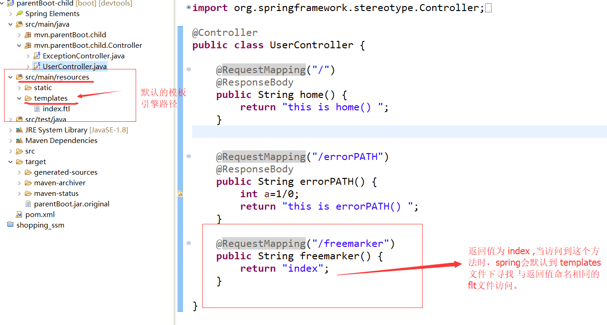
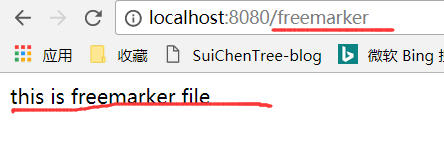
若templates文件中没有与返回值相同的页面，则报404错误。
PS:
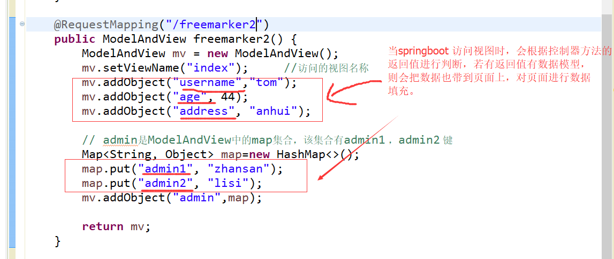
index.ftl:
<!DOCTYPE> <html> <head> <title> index.flt </title> </head> <body> <h1> hello , ${username} <br/> you age is ${age} <br/> you address is ${address} <br/> admin1 is ${admin.admin1} <br/> admin2 is ${admin.admin2} </h1> </body>
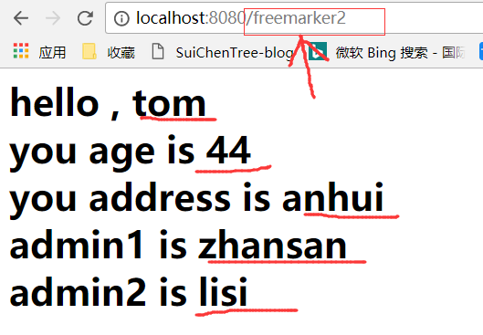
<!-- 加入 mybatis依赖 --> <dependency> <groupId>org.mybatis.spring.boot</groupId> <artifactId>mybatis-spring-boot-starter</artifactId> <version>1.3.1</version> </dependency> <dependency> <groupId>mysql</groupId> <artifactId>mysql-connector-java</artifactId> </dependency>
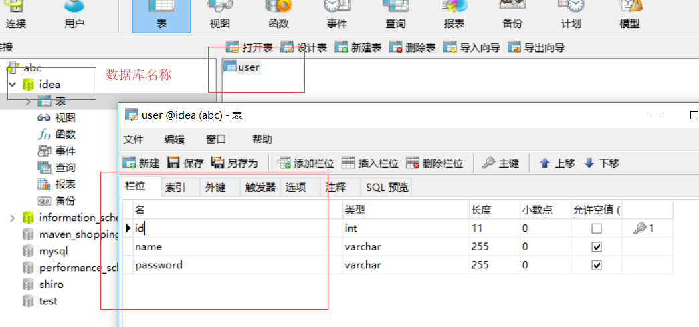
①：在src/main/resources 下创建 application.properties文件。并编写数据源配置：
## dataSource config
spring.datasource.url=jdbc:mysql://localhost:3306/idea
spring.datasource.username=root
spring.datasource.password=root
spring.datasource.driver-class-name=com.mysql.jdbc.Driver
②：编写实体类：
package mvn.parentBoot.child.entity; public class User { private int id; private String name; private String password; public User() {} //....省略一部分 }
③：编写Mapper接口（Dao层）：
package mvn.parentBoot.child.Dao; public interface Userdao { @Insert("insert into user(name,password) values(#{name},#{password})") public int insert(User u); @Delete(" delete from user where id=#{id}") public int delete(User u); @Update("update user set name=#{name},password=#{password} where id=#{id}") public int updateByid(User u); @Select("select * from user where id=#{id}") public User selectByid(User u); }
④：编写Service层：
package mvn.parentBoot.child.Service; @Service public class UserService { @Autowired //获取容器中的dao private Userdao userdao; public int insert(User u) { return userdao.insert(u); } public int delete(User u) { return userdao.delete(u); } public int updateByid(User u) { return userdao.updateByid(u); } public User selectByid(User u) { return userdao.selectByid(u); } }
⑤：编写Controller层：
package mvn.parentBoot.child.Controller; @Controller public class UserController { @Autowired //获取容器中的service private UserService userService; @RequestMapping("/") //使项目一运行就是一个页面 public String Index() { return "index"; } @RequestMapping("/insertUser") @ResponseBody public String insert(User user) { System.out.println("this is insert"); int a=userService.insert(user); if(a==1) { return "success"; }else { return "shibai"; } } @RequestMapping(value="/updateUser") public String update(User user) { System.out.println("this is update User"); int a=userService.updateByid(user); if(a==1) { return "success"; }else { return "shibai"; } } @RequestMapping(value="/SeleceUser") public String select(User user) { System.out.println("this is select User"); User a=userService.selectByid(user); if(a!=null) { System.out.println("select :"+a); return "success"; }else { return "shibai"; } } @RequestMapping(value="/deleteUser") public String delete(User user) { System.out.println("this is delete User"); int a=userService.delete(user); if(a==1) { return "success"; }else { return "shibai"; } } }
⑥：编写项目入口类（注意要加@MapperScan注解）：
package mvn.parentBoot.child; @SpringBootApplication // 1. 开启springboot程序。 2. 扫描所在的子包，并把注解类，注入到ioc容器中。 @MapperScan(basePackages={"mvn.parentBoot.child.Dao"}) //扫描与mybatis整合时的mapper接口（dao层） public class SpringbootMain { public static void main(String[] args) throws Exception { SpringApplication.run(SpringbootMain.class, args); } }
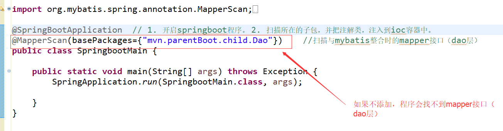
index.ftl:
<!DOCTYPE> <html> <head> <title> index.flt </title> </head> <body> <h1> INSERT USER: <form action="insertUser" method="post"> Username : <input type="text" name="name"/> Password : <input type="text" name="password"/> <input type="submit" value="tijiao"/> </form> <br/> UPDATE USER <form action="updateUser" method="post"> id : <input tye="text" name="id"/> Username : <input type="text" name="name"/> Password : <input type="text" name="password"/> <input type="submit" value="tijiao"/> </form> <br/> SELECT USER <form action="SeleceUser" method="post"> id : <input tye="text" name="id"/> <input type="submit" value="tijiao"/> </form> <br/> DELETE USER <form action="deleteUser" method="post"> id : <input tye="text" name="id"/> <input type="submit" value="tijiao"/> </form> </h1> </body>
shibai.ftl:
this is shibai
success.ftl:
this is success
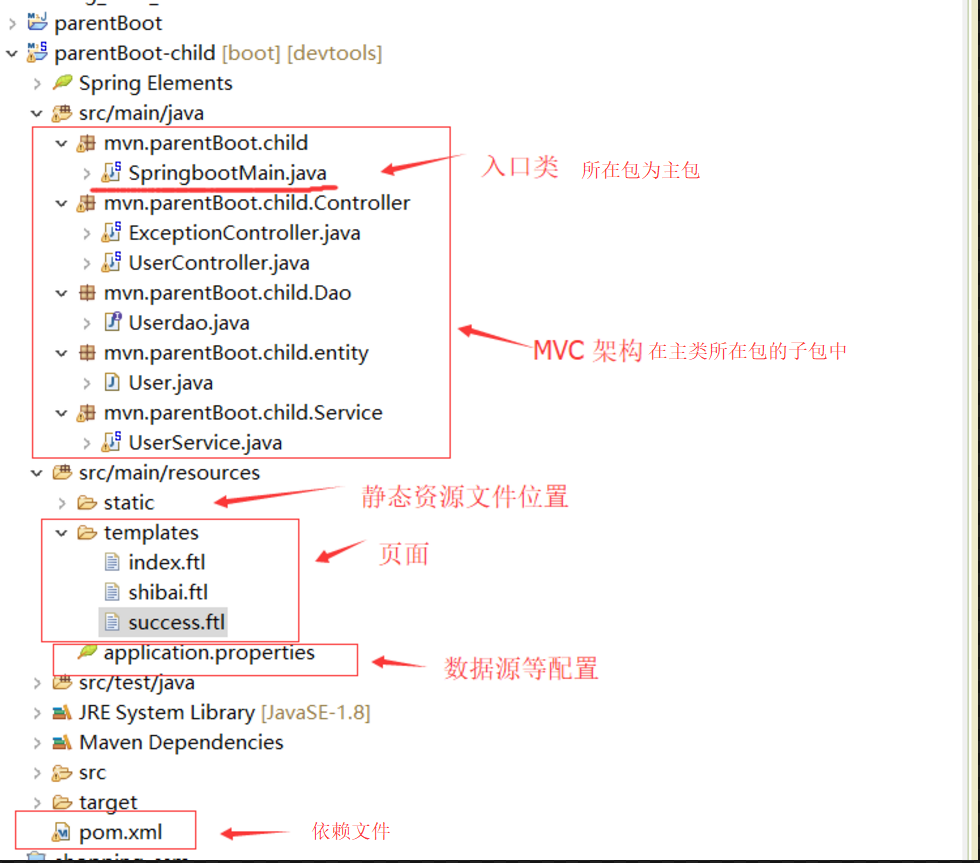
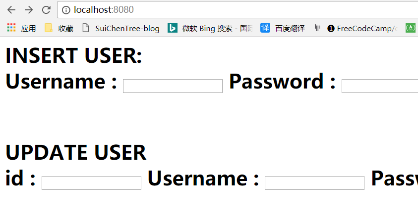
文件结构图：
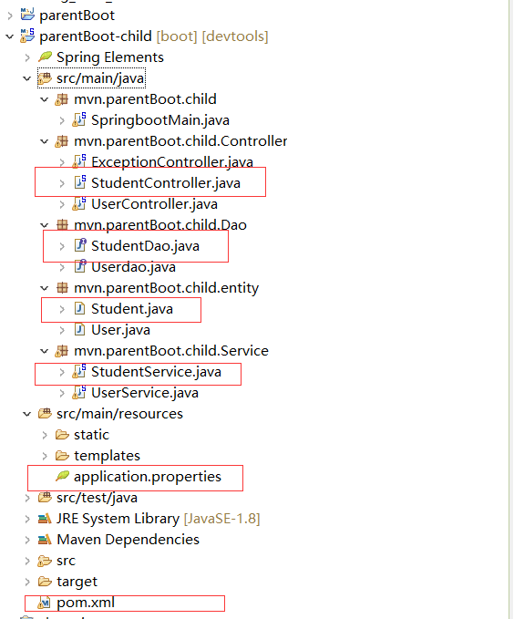
①：创建数据库：
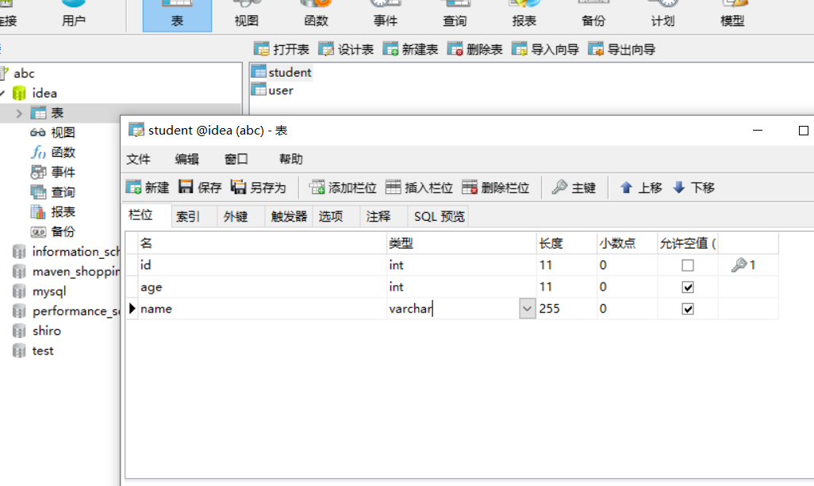
②：添加springDate JPA 的依赖：
<!-- 添加 spring jpa 的依赖 --> <dependency> <groupId>org.springframework.boot</groupId> <artifactId>spring-boot-starter-data-jpa</artifactId> </dependency> <!--添加mysql 依赖--> <dependency> <groupId>mysql</groupId> <artifactId>mysql-connector-java</artifactId> </dependency>
③：增加spring Data JPA 的配置（在application.properties中）：
## dataSource config
spring.datasource.url=jdbc:mysql://localhost:3306/idea
spring.datasource.username=root
spring.datasource.password=root
spring.datasource.driver-class-name=com.mysql.jdbc.Driver
### Jpa config
spring.jpa.database=mysql
spring.jpa.show-sql=true
spring.jpa.hibernate.hbm2ddl-auto=update
spring.jpa.hibernate.naming.implicit-strategy=org.hibernate.boot.model.naming.ImplicitNamingStrategyLegacyJpaImpl
spring.jpa.hibernate.naming.physical-strategy=org.hibernate.boot.model.naming.PhysicalNamingStrategyStandardImpl
spring.jpa.properties.hibernate.dialect=org.hibernate.dialect.MySQL5InnoDBDialect
④：编写实体类：
package mvn.parentBoot.child.entity; import javax.persistence.Column; import javax.persistence.Entity; import javax.persistence.GeneratedValue; import javax.persistence.Id; import javax.persistence.Table; /* * @Entity注释指名这是一个实体Bean， * @Table注释指定了Entity所要映射带数据库表，其中@Table.name()用来指定映射表的表名。 * 如果缺省@Table注释，系统默认采用类名作为映射表的表名。 * * */ @Table(name="student") @Entity public class Student { @GeneratedValue @Id private Integer id; @Column private String name; @Column private Integer age; public Student() {} // 省略 get/set 方法 }
⑤：编写dao,Service,Controller层代码：
StudentDao.java:
package mvn.parentBoot.child.Dao; import org.springframework.data.jpa.repository.JpaRepository; import mvn.parentBoot.child.entity.Student; public interface StudentDao extends JpaRepository<Student, Integer>{ // 在springdata jpa 中 dao层接口继承这个方法，该方法里面已经写好了各种操作表的CRUD方法。 }
StudentService.java
package mvn.parentBoot.child.Service; @Service public class StudentService { @Autowired private StudentDao studao; public Student insert(Student stu) { Student stu1 = studao.save(stu); //stu1是该数据在表中的最新数据 System.out.println(stu1 + "this is StudentService insert()"); return stu1; } public Student update(Student stu) { Student stu1 = studao.save(stu); System.out.println(stu1 + "this is StudentService update()"); return stu1; } public void delete(Integer id) { studao.deleteById(id); System.out.println("this is StudentService deleteById()"); } public Object select(Integer id) { Object stu = studao.findById(id); return stu; } }
StudentController.java:
package mvn.parentBoot.child.Controller; @Controller public class StudentController { @Autowired private StudentService studentService; // 由于 JPA 是通过对象的变化，来改变对数据库的数据。 // 所有 新增数据 与 更新数据 在本质上是一样的。 @RequestMapping("/insertStu") @ResponseBody public String insertStu() { System.out.println("this is StudentController insertStu()"); Student student=new Student(); student.setName("asdadsadsadsa"); student.setAge(88); Student s = studentService.insert(student); if(s==null) { return "shibai"; }else { return "success"; } } @RequestMapping("/updateStu") @ResponseBody public String updateStu() { System.out.println("this is StudentController updateStu()"); Student student=new Student(); student.setId(2); student.setName("asdadsadsadsa"); student.setAge(88); Student s = studentService.update(student); if(s==null) { return "shibai"; }else { return "success"; } } @RequestMapping("/deleteStu") @ResponseBody public String deleteStu() { System.out.println("this is StudentController deleteStu()"); studentService.delete(1); return "success"; } @RequestMapping("/selectStu") @ResponseBody public String selectStu() { System.out.println("this is StudentController selectStu()"); Object stu = studentService.select(2); System.out.println("selectStu return is "+stu); return "success"; } }
⑥：运行程序。
①：模拟两个数据源：
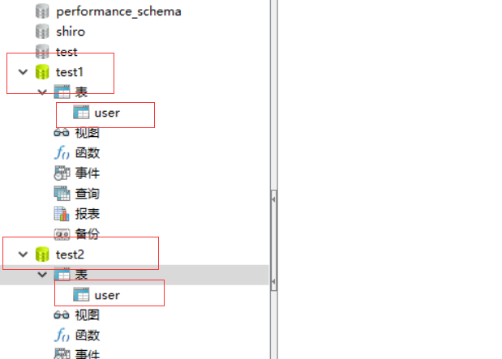
②：多数据源的配置:
#=====================multiple database config============================
#first
first.spring.datasource.jdbcUrl=jdbc:mysql://localhost/test1
first.spring.datasource.username=root
first.spring.datasource.password=root
first.spring.datasource.driver-class-name=com.mysql.jdbc.Driver
#second
second.spring.datasource.jdbcUrl=jdbc:mysql://localhost/test2
second.spring.datasource.username=root
second.spring.datasource.password=root
second.spring.datasource.driver-class-name=com.mysql.jdbc.Driver
③：建立一个子包，为数据库创建SqlSessionFactory等对象并注入到spring的IOC容器中：
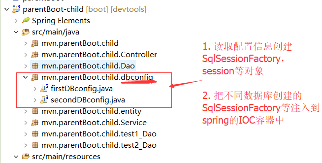
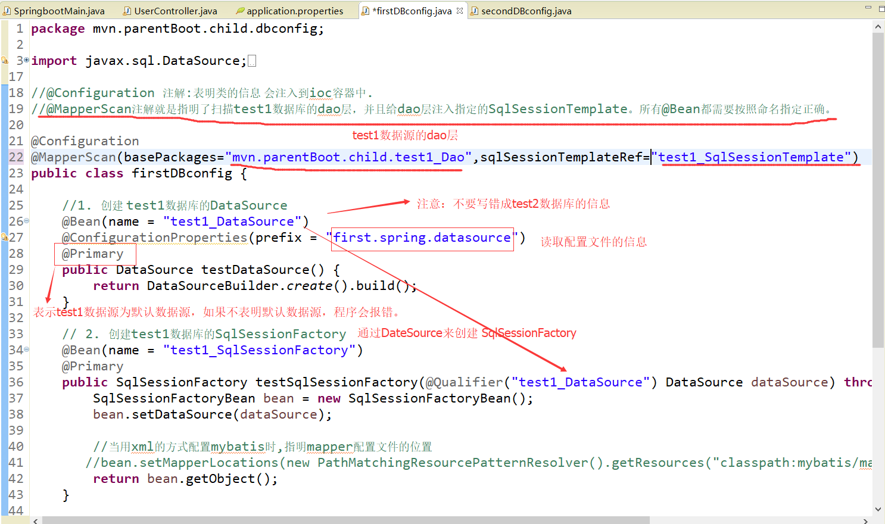
firstDBconfig.java:
package mvn.parentBoot.child.dbconfig; //@Configuration 注解:表明类的信息 会注入到ioc容器中. //@MapperScan注解就是指明了扫描test1数据库的dao层，并且给dao层注入指定的SqlSessionTemplate。所有@Bean都需要按照命名指定正确。 @Configuration @MapperScan(basePackages = "mvn.parentBoot.child.test1_Dao", sqlSessionTemplateRef = "test1_SqlSessionTemplate") public class firstDBconfig { //1. 创建 test1数据库的DataSource @Bean(name = "test1_DataSource") @ConfigurationProperties(prefix = "first.spring.datasource") @Primary public DataSource testDataSource() { return DataSourceBuilder.create().build(); } // 2. 创建test1数据库的SqlSessionFactory @Bean(name = "test1_SqlSessionFactory") @Primary public SqlSessionFactory testSqlSessionFactory(@Qualifier("test1_DataSource") DataSource dataSource) throws Exception { SqlSessionFactoryBean bean = new SqlSessionFactoryBean(); bean.setDataSource(dataSource); //当用xml的方式配置mybatis时,指明mapper配置文件的位置 //bean.setMapperLocations(new PathMatchingResourcePatternResolver().getResources("classpath:mybatis/mapper/test1/*.xml")); return bean.getObject(); } // 3. 创建test1数据库的事务管理 @Bean(name = "test1_TransactionManager") @Primary public DataSourceTransactionManager testTransactionManager(@Qualifier("test1_DataSource") DataSource dataSource) { return new DataSourceTransactionManager(dataSource); } // 4. 把DataSource,SqlSessionFactory 封装到test1数据库的SqlSessionTemplate @Bean(name = "test1_SqlSessionTemplate") @Primary public SqlSessionTemplate testSqlSessionTemplate(@Qualifier("test1_SqlSessionFactory") SqlSessionFactory sqlSessionFactory) throws Exception { return new SqlSessionTemplate(sqlSessionFactory); } }
package mvn.parentBoot.child.dbconfig; //@Configuration 注解:表明类的信息 会注入到ioc容器中. //@MapperScan注解就是指明了扫描test2数据库的dao层，并且给dao层注入指定的SqlSessionTemplate。所有@Bean都需要按照命名指定正确。 @Configuration @MapperScan(basePackages = "mvn.parentBoot.child.test2_Dao", sqlSessionTemplateRef = "test2_SqlSessionTemplate") public class secondDBconfig { //1. 创建 test1数据库的DataSource @Bean(name = "test2_DataSource") @ConfigurationProperties(prefix = "second.spring.datasource") public DataSource testDataSource() { return DataSourceBuilder.create().build(); } // 2. 创建test1数据库的SqlSessionFactory @Bean(name = "test2_SqlSessionFactory") public SqlSessionFactory testSqlSessionFactory(@Qualifier("test2_DataSource") DataSource dataSource) throws Exception { SqlSessionFactoryBean bean = new SqlSessionFactoryBean(); bean.setDataSource(dataSource); //当用xml的方式配置mybatis时,指明mapper配置文件的位置 //bean.setMapperLocations(new PathMatchingResourcePatternResolver().getResources("classpath:mybatis/mapper/test1/*.xml")); return bean.getObject(); } // 3. 创建test1数据库的事务管理 @Bean(name = "test2_TransactionManager") public DataSourceTransactionManager testTransactionManager(@Qualifier("test2_DataSource") DataSource dataSource) { return new DataSourceTransactionManager(dataSource); } // 4. 把DataSource,SqlSessionFactory 封装到test2数据库的SqlSessionTemplate @Bean(name = "test2_SqlSessionTemplate") public SqlSessionTemplate testSqlSessionTemplate(@Qualifier("test2_SqlSessionFactory") SqlSessionFactory sqlSessionFactory) throws Exception { return new SqlSessionTemplate(sqlSessionFactory); } }
④：建立子包，存放为每一个数据源创建的dao层（几个数据源就有几个dao层）
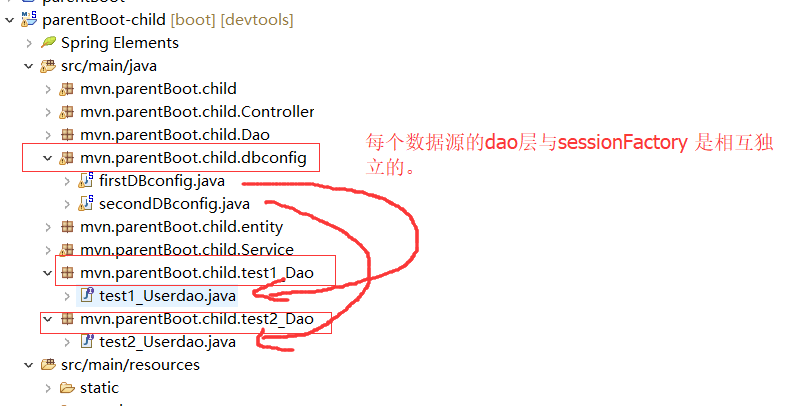
test1_Userdao.java:
package mvn.parentBoot.child.test1_Dao; public interface test1_Userdao { @Insert("insert into user(name,password) values(#{name},#{password})") public int insert(User u); @Delete(" delete from user where id=#{id}") public int delete(User u); @Update("update user set name=#{name},password=#{password} where id=#{id}") public int updateByid(User u); @Select("select * from user where id=#{id}") public User selectByid(User u); }
test2_Userdao.java:
package mvn.parentBoot.child.test2_Dao; public interface test2_Userdao { @Insert("insert into user(name,password) values(#{name},#{password})") public int insert(User u); @Delete(" delete from user where id=#{id}") public int delete(User u); @Update("update user set name=#{name},password=#{password} where id=#{id}") public int updateByid(User u); @Select("select * from user where id=#{id}") public User selectByid(User u); }
⑤：可以跳过Service层，直接编写Controller层：
UserController.java:
package mvn.parentBoot.child.Controller; @Controller public class UserController { @Autowired //获取容器中的service private UserService userService; @Autowired private test1_Userdao test1userDao; @Autowired private test2_Userdao test2userDao; @RequestMapping("/") public String Index() { return "index"; } @RequestMapping("/test1_insertUser") @ResponseBody public String test1_insertUser() { System.out.println("this is test1_insertUser"); User user=new User(); user.setName("xiaohua"); user.setPassword("qwe"); int a=test1userDao.insert(user); if(a==1) { return "success"; }else { return "shibai"; } } @RequestMapping(value="/test1_updateUser") public String test1_updateUser() { System.out.println("this is test1_updateUser"); User user=new User(); user.setId(13); user.setName("xiaouhuahuahua"); user.setPassword("qweqweqwe"); int a=test1userDao.updateByid(user); if(a==1) { return "success"; }else { return "shibai"; } } @RequestMapping(value="/test1_selectUser") public String test1_selectUser() { System.out.println("this is test1_selectUser"); User user=new User(); user.setId(13); User a=test1userDao.selectByid(user); if(a!=null) { System.out.println("select :"+a); return "success"; }else { return "shibai"; } } @RequestMapping(value="/test1_deleteUser") public String test1_deleteUser() { System.out.println("this is test1_deleteUser"); User user=new User(); user.setId(13); int a=test1userDao.delete(user); if(a==1) { return "success"; }else { return "shibai"; } } }
⑥：运行程序：执行test1数据源的dao层，就相当于操作test1数据库。
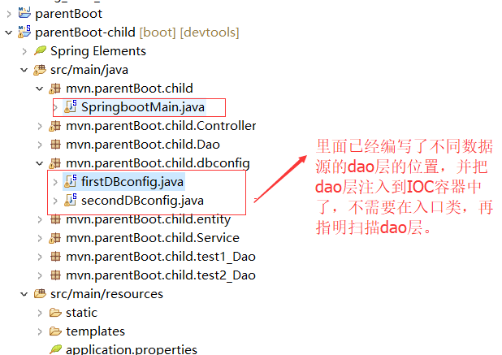
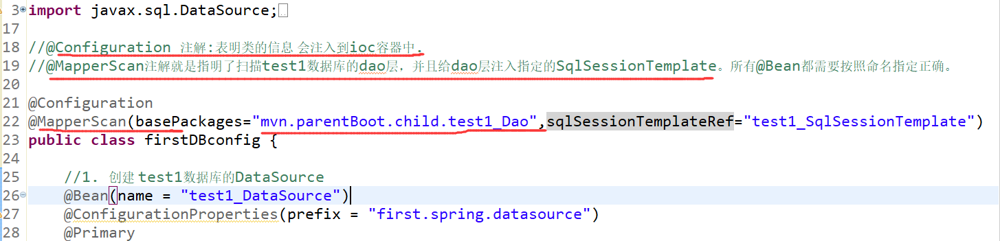
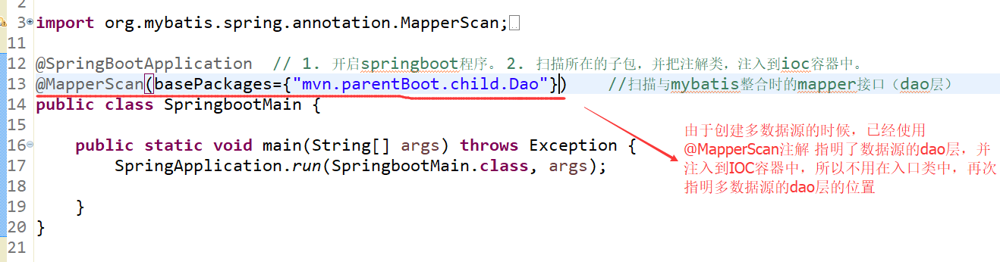
Spring Boot 使用事务非常简单，在访问数据库的Service层方法上添加注解 @Transactional 便可。
因为在springboot中已经默认对jpa、jdbc、mybatis开启了事务，引入它们依赖的时候，事物就默认开启。当然，如果你需要用其他的orm，比如beatlsql，就需要自己配置相关的事物管理器。
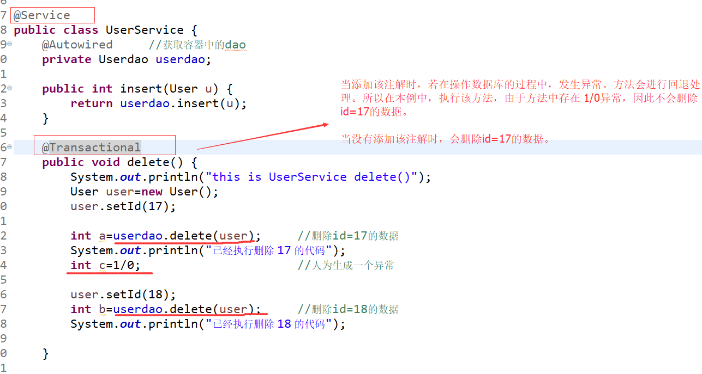
默认情况下，Spring Boot会用 Logback日志框架来记录日志，并把INFO级别输出到控制台。
SpringBoot 框架，默认使用的日志框架为 logback。
当我们添加 spring-boot-starter-parent 依赖时，该依赖包含spring-boot-starter-logging 依赖（依赖的内容为logback日志框架）。
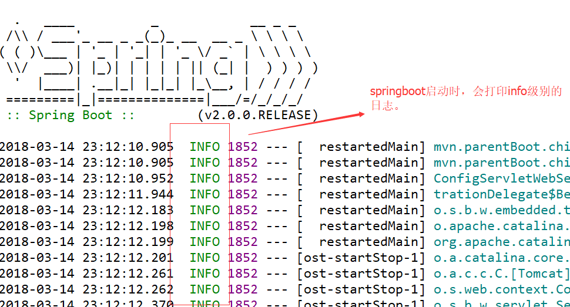
TRACE < DEBUG < INFO < WARN < ERROR < FATAL。
如果设置为 WARN ，则低于 WARN 的信息都不会输出。
Spring Boot中默认配置ERROR、WARN和INFO级别的日志输出到控制台。
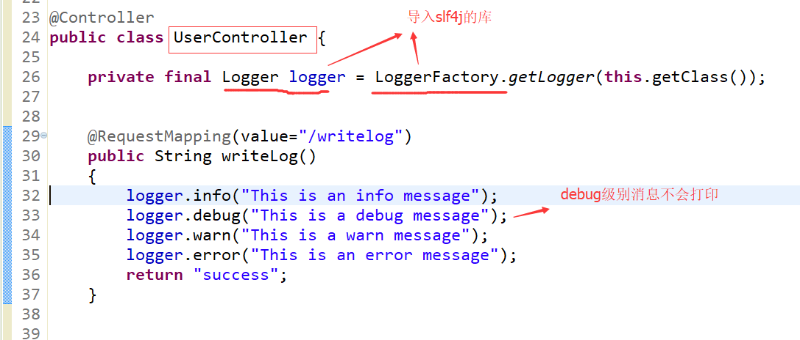
执行该方法：
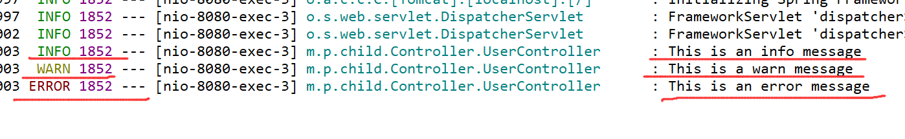
通过对application.properties文件进行修改，来对Logback进行配置。
application.properties
# LOG:
logging.file=log.log
logging.level.mvn.parentBoot.child.Controller = debug
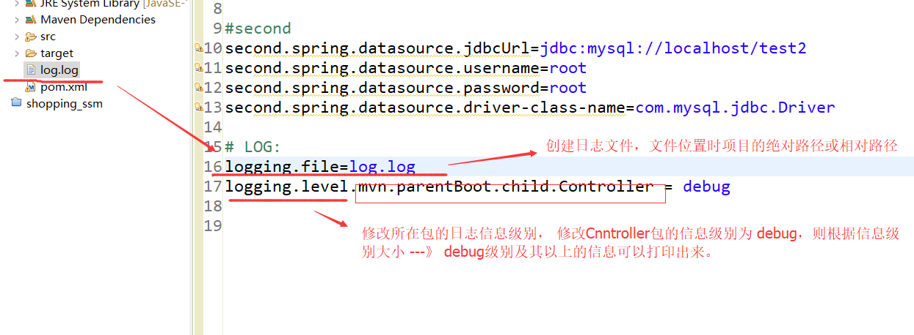
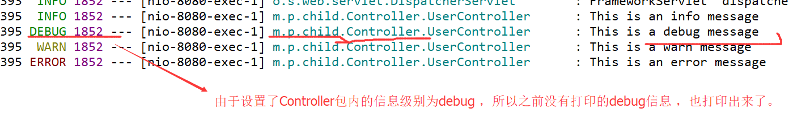
①：引入AOP依赖
<dependency> <groupId>org.springframework.boot</groupId> <artifactId>spring-boot-starter-aop</artifactId> </dependency>
②：创建切面类（把控制器方法作为切入点）：
package mvn.parentBoot.child.AOP; @Aspect //使用@Aspect注解将一个java类定义为切面类 @Component public class aopTest { private Logger logger = LoggerFactory.getLogger(this.getClass()); ////使用@Pointcut定义一个切入点，可以是一个规则表达式,这里时匹配 UserController类的所有方法。 @Pointcut("execution(public * mvn.parentBoot.child.Controller.UserController.*(..))") public void webLog() { System.out.println("this is webLog()"); } @Before(value="webLog()") //使用@Before在切入点开始处切入内容 public void doBefore(JoinPoint joinPoint) { // 接收到请求，记录请求内容 logger.info(" this is doBefore()"); } //使用@AfterReturning在切入点return内容之后切入内容（可以用来对处理返回值做一些加工处理） @AfterReturning(value="webLog()") public void doAfterReturning(JoinPoint joinPoint) { // 处理完请求，返回内容 logger.info("this is doAfterReturning()"); } }
③：运行程序，执行作为切入点的控制器方法：
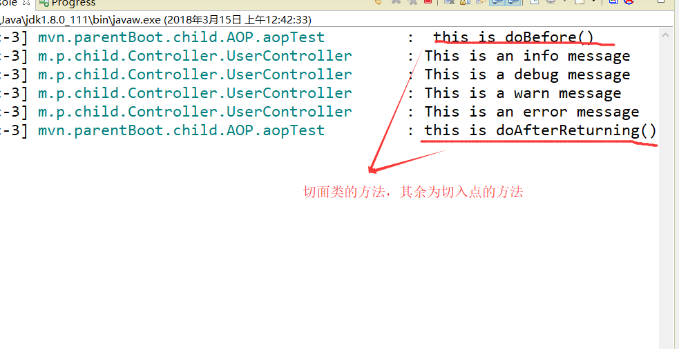
④：总结：
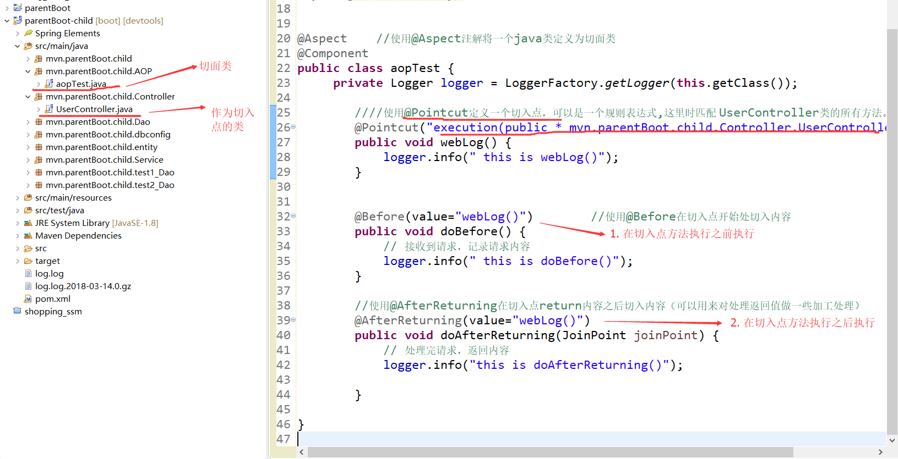